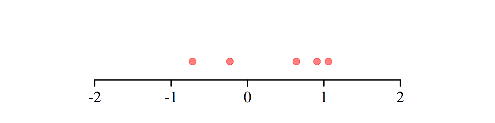
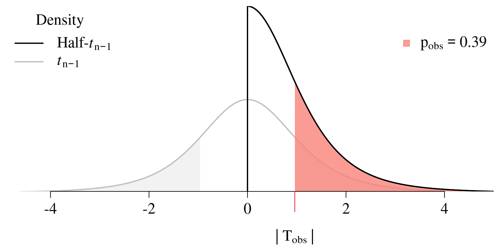
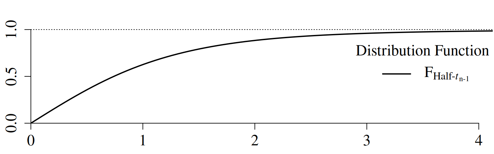
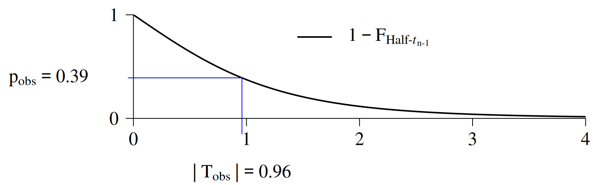
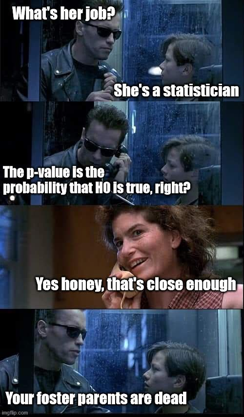

1 \(\mathrm{p}\)-Values: Challenges for Hypothesis Testing
\[ \require{color} %% Colorbox within equation-environments: \newcommand{\highlight}[2][yellow]{\mathchoice% {\colorbox{#1}{$\displaystyle#2$}}% {\colorbox{#1}{$\displaystyle#2$}}% {\colorbox{#1}{$\displaystyle#2$}}% }% \]
1.1 Introduction
🎯 Lecture Goals
In this lecture, we’ll tackle three key questions:
- How do \(\mathrm{p}\)-values actually work?
- What are the typical misuses and misinterpretations of \(\mathrm{p}\)-values?
- What is good practice when working with \(\mathrm{p}\)-values?
We’ll explore these questions using the two-sided \(t\)-test as our main example. Parallel arguments apply to one-sided testing and other hypothesis tests (F-test, etc.)
💻 Example: Marketing Campaign
Imagine a company runs a marketing campaign in \(n = 5\) stores and measures sales before and after the campaign.
| Store | Sales Before | Sales After | Difference (After \(-\) Before) |
|---|---|---|---|
| \(1\) | \(4.86\) | \(5.50\) | \(X_{1,\mathrm{obs}}=0.64\) |
| \(2\) | \(4.96\) | \(4.24\) | \(X_{2,\mathrm{obs}}=-0.72\) |
| \(3\) | \(6.01\) | \(5.78\) | \(X_{3,\mathrm{obs}}=-0.23\) |
| \(4\) | \(4.84\) | \(5.75\) | \(X_{4,\mathrm{obs}}=0.91\) |
| \(5\) | \(2.84\) | \(3.90\) | \(X_{5,\mathrm{obs}}=1.06\) |
Figure 1.1 visualizes the observed differences \(X_{i,\mathrm{obs}},\) \(i=1,\dots,5.\)
We want to know:
Research question: Was the marketing campaign successful? Did it show a tendency (location-shift) toward significantly higher or lower sales?
Statistical question: Is the mean, \(\mu,\) of \(X_1,\dots,X_n\) different from zero?
Two-Sided \(t\)-Test
We test
The \(t\)-statistic is \[ \mathrm{T} = \frac{\bar{X} - 0}{S/\sqrt{n}}\overset{H_0}{\sim} t_{n-1}, \] where
- \(n\) is the sample size,
- \(\bar{X}=\frac{1}{n}\sum_{i=1}^n X_i\) is the sample mean, and
- \(S= \sqrt{\frac{1}{n-1}\sum_{i=1}^n(X_i-\bar{X})}\) is the sample standard deviation.
Observed (obs) Value of the \(t\)-Statistic (Marketing Example)
\[ \mathrm{T}_{\mathrm{obs}} = \frac{\bar{X}_{\mathrm{obs}} - 0}{S_{\mathrm{obs}}/\sqrt{n}} = 0.96 \]
- \(n=5\)
- \(\bar{X}_{\mathrm{obs}}=\frac{1}{5}\sum_{i=1}^5 X_{i,\mathrm{obs}} = 0.33\)
- \(S_{\mathrm{obs}} = \sqrt{\frac{1}{5-1}\sum_{i=1}^5(X_{i,\mathrm{obs}}-\bar{X}_{\mathrm{obs}})} = 0.77\)
1.2 The Two-Sided \(\mathrm{p}\)-Value of the \(t\)-Test
⚙️ Definition of the \(\mathrm{p}\)-Value
Two-sided \(\mathrm{p}\)-value of the \(t\)-test \[\displaystyle\mathrm{p}_{\mathrm{obs}} = \mathrm{P}\big(\,|\mathrm{T}|\,\geq |\mathrm{T}_{\mathrm{obs}}|\;\big|\;H_0\;\text{is true}\big)\]
🧮 Computing the \(\mathrm{p}\)-Value
Note that \[ \mathrm{T}=\frac{\bar{X}-0}{S/\sqrt{n}}\overset{H_0}{\sim}t_{n-1}\phantom{Half} \] implies that \[ \highlight{|\mathrm{T}|}=\frac{|\bar{X}-0|}{S/\sqrt{n}}\overset{H_0}{\sim}\highlight{\textrm{Half-}t_{n-1}.} \]

\[\begin{align*} \mathrm{F}_{\,\text{Half-}t_{n-1}}(x)&=\mathrm{P}(|\textrm{T}|\leq x\mid H_0\;\text{is true}),\quad |\textrm{T}|\overset{H_0}{\sim} \textrm{Half-}t_{n-1} \end{align*}\]
extraDistr::pht(q = x, nu = n - 1)

Computing the \(\mathrm{p}\)-Value (Marketing Example)
\[\begin{align*} \mathrm{p}_{\mathrm{obs}} &=1 - \mathrm{F}_{\,\text{Half-}t_{n-1}}\big(|\mathrm{T}_{\mathrm{obs}}|\big)\\ &=1 - \mathrm{F}_{\,\text{Half-}t_{n-1}}\big(\,0.96\,\big)=0.39 \end{align*}\]
Computation of the observed \(\operatorname{p}\)-value:

Computation of the observed \(\operatorname{p}\)-value:
library("extraDistr")
n <- 5
df <- n - 1
## 1 minus the distribution function of the Half-t
p_obs <- 1 - pht(q = abs(T_obs), nu = df)
## Alternatively:
result <- t.test(X_obs, mu = 0, alternative = "two.sided")
p_obs <- result$p.value⚖️ Test Decision based on the \(\mathrm{p}\)-Value
We reject \(H_0\) at the significance level \(0<\alpha<1\) if \[ \highlight{\mathrm{p}_{\mathrm{obs}} < \alpha} \]
We fail to reject \(H_0\) at the significance level \(0<\alpha<1\) if \[ \highlight{\mathrm{p}_{\mathrm{obs}} \geq \alpha} \]
Test Decision (Marketing Example)
Since \[ \mathrm{p}_{\mathrm{obs}}=0.39 \geq \alpha = 0.05 \] we fail to reject \(H_0\colon \mu =0\) at the significance level \(\alpha=0.05.\)
1.3 \(\mathrm{p}\)-Values: Misused and Misunderstood
\(\mathrm{p}\)-values can be powerful tools — when used correctly. But in practice, they’re often misused and misinterpreted, leading to a surprising amount of published “bad science.”
This misuse has sparked an ongoing debate: Should we rely on \(\mathrm{p}\)-values and the concept of statistical significance at all?
📚 Further reading:
- The problem with p Values: How significant are they, really? (Cumming 2013)
- Scientific method: Statistical errors (Nuzzo 2014)
- Scientists rise up against statistical significance (Amrhein, Greenland, and McShane 2019)
To clarify what \(\mathrm{p}\)-values and statistical significance actually mean (and what they don’t), the American Statistical Association (ASA) published two landmark position papers:
📄 ASA Statements:
- The ASA statement on p-values: Context, process, and purpose (Wasserstein and Lazar 2016)
- Moving to a world beyond “p< 0.05” (Wasserstein, Schirm, and Lazar 2019)
🙁 \(\mathrm{p}\)-Hacking
\(\mathrm{p}\)-hacking is arguably the most common misuse of \(\mathrm{p}\)-values. It happens when researchers keep adjusting their analysis until they find a statistically significant result \((\mathrm{p}_{\mathrm{obs}} < \alpha)\) — even if there’s no real effect.
🧪 Typical “tricks” include:
Running lots of tests until one happens to be “significant.”
Changing the model setup (adding or removing variables) until an insignificant result turns “significant”.
Selectively including or excluding data points to turn an insignificant result into a “significant” one.
This is called the multiple comparison problem — the more tests you run, the higher the chance of finding a false positive (falsely rejecting a correct \(H_0\)).
Multiple Comparison Problem

Adjusting for Multiple Comparisons
Alternatives to the Bonferroni correction:
- Holm–Bonferroni method
- Hochberg’s step-up procedure
Mitigating the Misuse of \(\mathrm{p}\)-Values
✅ Correct Interpretation of the \(\textrm{p}\)-Value
Last but not least:
The p-value is calculated assuming the null hypothesis is true. Therefore, it cannot be the probability of that same hypothesis being true.

📄 Good Practice
Use \(\mathrm{p}\)-values as one piece of evidence, not the final verdict. Always combine them with
- effect sizes,
- confidence intervals, and
- context.
Accept that there will always be uncertainty, and be thoughtful, open, and modest.
1.4 Overview: \(\mathrm{p}\)-Values of other Test Statistics
Here you’ll find more great things about the \(p\)-value!
References
Amrhein, Valentin, Sander Greenland, and Blake McShane. 2019.
“Scientists Rise up Against Statistical Significance.” https://www.nature.com/articles/d41586-019-00857-9.
Cumming, Geoff. 2013. “The Problem with p Values: How Significant
Are They, Really?” http://phys.org/wire-news/145707973/the-problem-with-p-values-how-significant-are-they-really.html.
Nuzzo, Regina. 2014. “Scientific Method: Statistical
Errors.” Nature 506 (7487).
Sagan, Carl. 1997. The Demon-Haunted World: Science as a Candle in
the Dark. Headline Book Publishing.
Wasserstein, Ronald L, and Nicole A Lazar. 2016. “The ASA
Statement on p-Values: Context, Process, and
Purpose.” The American Statistician 70 (2): 129–33.
Wasserstein, Ronald L, Allen L Schirm, and Nicole A Lazar. 2019.
“Moving to a World Beyond p< 0.05.” The American
Statistician 73: 1–19.